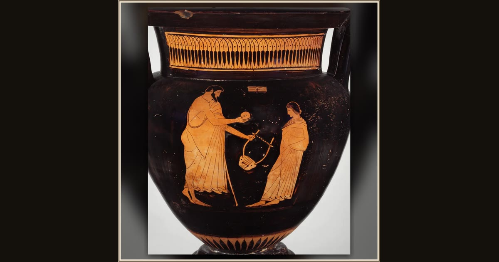

Terracotta column-krater (bowl for mixing wine and water)
Attributed to the Pig Painter · ca. 475–465 BCE · met
A bearded man offers a lyre to a youth on this terracotta mixing bowl; Aristotle argues that children should practice music to learn to judge it (8.1340a) Explore its place in Aristotle's Politics, Book VIII, section 7.